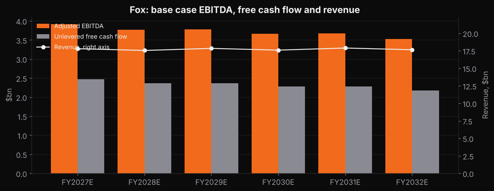
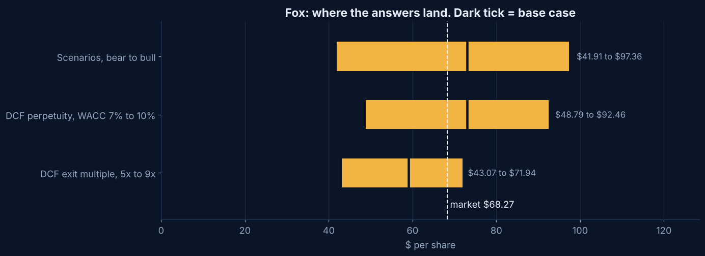

Project
Fox DCF model.
A pure linear network company with no debt problem, so it isolates the one assumption that drives the Skydance bear case: how fast cable networks decline.
Why this company
The clean read on linear decline
Skydance's bear case breaks because linear television shrinks 11 percent a year under $89 billion of debt. Fox is two thirds cable and broadcast networks with almost no net debt, so it shows what linear is worth on its own. Fiscal 2026 revenue still grew 5 percent with Super Bowl LX, so the decline is not a straight line.
Fox agreed in June 2026 to buy Roku for about $22 billion. It has not closed, so Roku is out.
The result
The numbers
Base case, perpetuity method at a 7.6 percent WACC and 1 percent long term growth. Just above the $68.27 price.
Base case, exit multiple method at 7 times FY2032 EBITDA. The market pays about 8 times today.
Perpetual growth the price implies. The market and I agree on Fox within a point, which is the best check I have that the template works.
Share of value past FY2032. Lowest of the five. A long first year and flat cash flow put more of the value inside the forecast.
Bear to bull across both methods. Bear runs cable down 4 to 5 percent a year with margins at 17 percent. Bull holds margins at 23 and grows Tubi.
Model outputs under stated assumptions. Nothing on this page is a recommendation to buy or sell anything.
How it is built
Inputs that differ from the template
- Base year. Fiscal 2026 actuals: revenue $17.1 billion, adjusted EBITDA $3.9 billion, capex $502 million, depreciation $410 million.
- Revenue. Three lines. Cable $7.5 billion, Television $9.9 billion and Other $400 million for FY2027. Growth alternates, up in even fiscal years with political advertising, Super Bowls and the World Cup, down in odd years.
- EBITDA. Margin 22 percent drifting down to 20 as sports rights grow faster than revenue. Fiscal 2026 was 22.8 percent.
- Cash flow. Capex 2.5 percent of revenue and a 0.5 percent working capital line for sports rights prepayments. Fiscal 2026 free cash flow fell to $1.5 billion from $3 billion with no explanation in the release, and the model does not assume it recovers all the way.
- Discount rate. Unlevered beta 0.6, under 0.1 debt to equity, cost of equity 7.8 percent, cost of debt 6.2 percent. WACC 7.6 percent.
- Equity bridge. $6.6 billion of debt, $4.2 billion of cash, 419.65 million shares from the 10-K cover, Class A and B together. The stub is 68 percent of FY2027.
Charts
Two pictures

Base case EBITDA, free cash flow and revenueThe sawtooth is the even year political cycle. EBITDA drifts down through it because rights costs do not take years off. 
Where the answers landBoth methods bracket the price. Street targets run $60 to $97 and the consensus is $78.


What I got wrong first
I almost built the combined company
Roku adds $14.2 billion of cash consideration, a bridge loan, 143 million new shares and $400 million of synergies. Modelling that from a press release would be guessing at the capital structure. Fox is standalone, and the Roku model waits for the S-4.
What would change the answer
In order of how much they move it
- Cable decline. Each point of annual cable revenue decline is worth about $2 a share. This is the same lever as the Skydance bear case, without the debt.
- Sports rights. The margin path assumes rights costs grow faster than revenue. If Fox lets a package go, margins hold and the bull case is in play.
- Roku. Closes in the first half of 2027 and changes the share count, the debt and the growth rate at once.
- The missing FCF. The base case assumes about $2.4 billion of unlevered free cash flow a year. If fiscal 2026 was the new normal rather than timing, the base case is high by about $30 a share.
Download
The model
Download the Excel model · Back to the five
Blue cells are inputs. Pick a scenario in Inputs cell C5. Roku is excluded on purpose. Nothing in the model comes from a Bloomberg Terminal or from any employer.